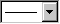

Trellis-Diagramm
Trellis-Plot
Trellis-Diagramme sind ein Mittel, multivariate Daten zu zeichnen, in Form einer Anordnung von MXN-Feldern. Ein einfaches Beispiel wäre: Zwei "primäre Variablen" werden gewählt, um einen gemeinsamen Achsensatz darzustellen (wiederholt in jedem Feld). Gegen diesen werden alle Kombinationen der zwei kategorialen Variablen (bezeichnet als "Bedingungsvariablen") gezeichnet. Jede Kombination der kategorialen Werte wird als ein separates Feld gezeichnet.

Wenn Ihre Daten eine Spalte mit kategorialen Daten enthalten oder mehrere Spalten eine Art geschachtelte Teilgruppierung der Daten darstellt, können Sie davon profitieren, die Daten in Origin als ein Trellis-Diagramm zu zeichnen. Trellis-Diagramme wurden in Origin 2017 eingeführt.
Trellis-Diagramme erstellen
- Markieren Sie eine oder mehrere Y-Spalten (oder einen Bereich aus einer oder mehreren Y-Spalten).
- Wählen Sie im Menü Zeichnen: 2D: Trellis.
Der Dialog plot_group wird geöffnet.
 |
Seit Origin 2018b unterstützt das Trellis-Diagramm weitere Diagrammtypen: gestapelte Säulen, gestapelte Balken, gestapelte Säulen 100 % und gestapelte Balken 100 %.
-
Die Boxdiagramme unterstützen auch ein Trellis-typische Anordnung. Siehe unten Boxdiagramm in Trellis-Diagramm zeichnen.
|
 |
Das folgende Beispiel verwendet den Datensatz <Origin-Verzeichnis>/Samples/Statistics/LogRegData.dat, importiert über Daten: Aus Datei importieren: Einzelnes ASCII mit den Standardeinstellungen. Der Datensatz enthält zwei Spalten mit kategorialen Daten: Gender (Col(C)) und Career_Change (Col(D)). Wir fügen eine weitere kategoriale Variable, City, hinzu und zeichnen diesen Datensatz dann in ein Trellis-Diagramm.
- Klicken Sie auf die Schaltfläche Neue Spalte hinzufügen
 auf der Symbolleiste Standard, um auf der rechten Seite eine neue Spalte zum Arbeitsblatt hinzuzufügen. auf der Symbolleiste Standard, um auf der rechten Seite eine neue Spalte zum Arbeitsblatt hinzuzufügen.
- Markieren Sie die Zellen 1 - 350, klicken Sie mit der rechten Maustaste und wählen Sie Spalten füllen mit: Beliebige Reihe von Text- & Numerischen Werten. Erstellen Sie diese Einstellungen in dem aufgerufenen Dialog erneut:
-
- Geben Sie in der Zelle Langname in der Spalte City den Namen Cities ein.
- Markieren Sie die Spalten Col(B) und wählen Sie Zeichnen: Kategorial: Trellis-Diagramm im Menü, um den Dialog plot_group zu öffnen.
- Wählen Sie Punktdiagramm als den Diagrammtyp. Klicken Sie unter Variable für separate Felder auf das Dreieck neben Horizontal und fügen Sie Gender und Cities (in dieser Reihenfolge) hinzu. Wählen Sie für Vertikal Career_Change.
Klicken Sie auf OK, um Ihr Trellis-Diagramm zu erstellen.
|
Anordnung der horizontalen und vertikalen Felder festlegen
Methode 1: Bedienelemente von Variable für separate Felder des Dialogs plot_group verwenden, um die horizontale und vertikale Anordnung der Felder zu bestimmen
Methode 2: Bedienelemente der Registerkarte Feld des Dialogs Details Zeichnung verwenden, um Zeichnungen in Feldern nach dem Zeichnen neu zu ordnen
- Markieren Sie im linken Bedienfeld von Details Zeichnung eine Datenzeichnung. Das rechte Bedienfeld umfasst die Registerkarte Feld.
- Auf dieser Registerkarte können Sie die Felder nach Größe oder nach gruppierten Spalte(n) neu anordnen.
- Nach Größe
- Nach Gruppenspalte(n)
|
- Importieren Sie die Datei <Origin-Verzeichnis>/Samples/Statistics/body.dat (Daten: Aus Datei importieren: Einzelnes ASCII) und übernehmen Sie die Standardeinstellungen. Es sollen die Daten Height vs. Weight gezeichnet werden, wobei Alter (age) und Geschlecht (gender) jeweils kategorisiert werden.
- Setzen Sie die Spalte Höhe (Height) als X, indem Sie mit der rechten Maustaste auf sie klicken und im Kontextmenü Setzen als: X auswählen.
- Markieren Sie die Spalten Höhe (Height) und Gewicht (Weight) und wählen Sie Zeichnen: Kategorial: Trellis-Diagramm, um den Dialog plot_group zu öffnen.
- Wählen Sie im Zweig Variable für separate Felder die Spalte Age (Alter) für Horizontal und die Spalte Gender (Geschlecht) für Vertikal.
Klicken Sie auf OK, um ein Trellis-Diagramm zu erstellen.
|
|
Es gibt eine praktische Beschränkung für die Anzahl der Felder, die das Trellis-Diagramm unterstützt, hauptsächlich beeinflusst von den Voraussetzungen der Systemressourcen. Standard ist eine Beschränkung auf 50 Felder, sowohl in horizontaler als auch in vertikaler Richtung -- eine Grenze, an die die meisten Anwender nicht stoßen. Die Einschränkung von 50 Feldern ist eher beliebig und kann durch Ändern des Werts der Systemvariablen @NOP bearbeitet werden. Wenn Sie die Felderbeschränkung, die durch @NOP festgelegt ist, überschreiten, meldet der Dialog plot_group, dass die zulässige Anzahl von Feldern überschritten wurde und die Grafik nicht ordnungsgemäß erstellt werden kann. Eine Anleitung, wie Sie den Wert einer Systemvariablen ändern, finden Sie in dieser FAQ.
|
Farbe auf Datenzeichnungen abbilden
Zeichnungen nach einer festgelegten Spalte farblich abbilden
-
- Legen Sie im Dialog plot_group die farblich abgebildete Spalte in Variable zum Färben von Datenpunkten fest.
oder
-
- Gehen Sie im Dialog Details Zeichnung zur Registerkarte Symbole und legen Sie Folgendes fest: Symbolfarbe: Nach Punkten: Index/Farbpalette.
Zeichnungen nach einer Farbinkrementliste farblich abbilden
- Gehen Sie im Dialog Details Zeichnung zur Registerkarte Symbole und legen Sie Folgendes fest: Symbolfarbe: Nach Punkten: Inkrement.
- Auf der Registerkarte Feld können Sie die Farben der Zeichnung innerhalb eines Feld oder zwischen Feldern inkrementieren.
- Innerhalb eines Felds
- Zwischen Feldern
Felder umbrechen
Wenn Sie viele Kategorien in einer Gruppierungsspalte haben, kann es sein, dass das Trellis-Diagramm aus Platzgründen gequetscht aussieht. Die Lösung ist das "Umbrechen" der Felder, d. h., eine Zeile oder Spalte der Felder wird in mehrere Zeilen/Spalten unterteilt.
- Klicken Sie zum Öffnen des Dialogs Details Zeichnung doppelt auf eine Zeichnung.
- Aktivieren Sie auf der Registerkarte Feld das Kontrollkästchen Felder bei Spalten-/Zeilenüberschreitung umbrechen und geben Sie die gewünschte Anzahl im Bearbeitungsfeld daneben ein.
|
Das folgende schnelle Beispiel verwendet eines der Beispielprojekte des Lernzentrums.
- Wählen Sie im Menü Hilfe: Lernzentrum, um den Dialog Lernzentrum zu öffnen.
- Wählen Sie die Registerkarte Diagrammbeispiel auf der linken Seite und dann die Option Trellis Plot in der Auswahlliste Beispiele in auf der rechten Seite.
- Klicken Sie doppelt auf die erste Zelle in der zweiten Zeile, um das OPJ zu öffnen. Aktivieren Sie die Arbeitsmappe Book9. Es soll ein Trellis-Diagramm mit Female vs. Male gezeichnet werden, kategorisiert nach Jahren und umgebrochen in 3x2-Felder.
- Klicken Sie mit der rechten Maustaste auf die Spalte C und wählen Sie Setzen als: X.
- Markieren Sie die Spalten C und D und wählen Sie Zeichnen: Kategorial: Trellis-Diagramm, um den Dialog plot_group zu öffnen.
- Wählen Sie Punktdiagramm als den Diagrammtyp.
- Wählen Sie Spalte B für Variable für separate Felder: Horizontal. Klicken Sie auf OK, um ein Trellis-Diagramm zu erstellen.
- Klicken Sie zum Öffnen des Dialogs Details Zeichnung doppelt auf das Punktdiagramm. Aktivieren Sie auf der Registerkarte Feld das Kontrollkästchen Felder bei Spalten-/Zeilenüberschreitung umbrechen und geben Sie 3 im Bearbeitungsfeld daneben ein.

|
Mehrere Felder in einem einzelnen Feld kombinieren
- Erstellen Sie eine Reihe kategorisierter Zeichnungen in mehreren Feldern mit Hilfe des Dialogs plot_group.
- Klicken Sie zum Öffnen des Dialogs Details Zeichnung doppelt auf das Trellis-Diagramm. Aktivieren Sie auf der Registerkarte Feld das Kontrollkästchen Sich überschneidende Felder in der Gruppe Horizontales und/oder Vertikales Feld.
|
Das folgende schnelle Beispiel verwendet eines der Projekte des Lernzentrums.
- Wählen Sie im Menü Hilfe: Lernzentrum, um den Dialog Lernzentrum zu öffnen. Wählen Sie in diesem Dialog Diagrammbeispiel im linken Bedienfeld und wählen Sie dann "Trellis-Diagramm" in der Auswahlliste Beispiele in.
- Klicken Sie doppelt auf das Diagramm in der unteren rechten Ecke, "Trellis - Overlap Panels with Multiple Categories Combination".
- Aktivieren Sie die Arbeitsmappe Book8. In einem Feld soll ein Satz Linien- + Punktkurven gezeichnet werden, gruppiert nach den Spalten Location und Treatment.
- Markieren Sie die Spalte C und wählen Sie Zeichnen: 2D: Trellis-Diagramm, um den Dialog plot_group zu öffnen.
- Wählen Sie Linie + Symbol als den Diagrammtyp.
- Wählen Sie die Spalten F und G für Variable für separate Felder: Horizontal. Klicken Sie auf OK, um ein Trellis-Diagramm zu erstellen.
- Klicken Sie zum Öffnen des Dialogs Details Zeichnung doppelt auf das Trellis-Diagramm. Aktivieren Sie auf der Registerkarte Feld das Kontrollkästchen Sich überschneidende Felder in der Gruppe Horizontales Feld.
- Wechseln Sie zur Registerkarte Symbole und setzen Sie Symbolfarbe: Nach Punkten: Inkrement von: auf Rot.
- Gehen Sie zur Registerkarte Feld. Aktivieren Sie die Option Zwischen Feldern in der Gruppe Inkrement auf Feld.

|
Boxdiagramm in Trellis-Diagramm zeichnen
- Boxdiagramm erstellen
- Klicken Sie zum Öffnen des Dialogs Details Zeichnung doppelt auf das Diagramm. Legen Sie die kategoriale(n) Spalte(n) auf der Registerkarte Feld, um die Boxen entsprechend in Felder zu trennen.
|
Das folgende schnelle Beispiel verwendet eines der Projekte des Lernzentrums.
- Wählen Sie im Menü Hilfe: Lernzentrum, um den Dialog Lernzentrum zu öffnen. Wählen Sie im aufgerufenen Dialog die Registerkarte Diagrammbeispiel auf der linken Seite und dann "Trellis-Diagramme" in der Auswahlliste oben.
- Klicken Sie zum Öffnen des Beispiels "Trellis Plots - Box Charts" doppelt auf das Diagramm.
Die Arbeitsmappe Trellis Plots - Box Charts enthält Verkaufszahlen von zwei Automobilmarken: BMW und Ferrari. Sie werden in einem Boxdiagramm gezeichnet, wobei die Boxen in unterschiedliche Felder nach ihrer Region unterteilt werden und die Mittelwertlinie für jede Region anzeigen.
- Erstellen Sie ein Boxdiagramm. Markieren Sie die Spalten col(C) und col(D) in Sheet1 und wählen Sie dann Zeichnen: Kategorial: Gruppierte Boxdiagramme, Roh, um ein Boxdiagramm zu erstellen.
- Unterteilen Sie die Boxen in 3 Felder entsprechen der unterschiedlichen Regionen. Klicken Sie zum Öffnen des Dialogs Details Zeichnung doppelt auf die Box. Aktivieren Sie die Registerkarte Feld. Wählen Sie Nach Spalte(n) für das Horizontale Feld und wählen Sie B(Y):Region für Spalte(n).
- Fügen Sie eine Mittelwertlinie für jedes Feld hinzu. Klicken Sie doppelt auf die Y-Achse, um den Dialog Achsen zu öffnen. Aktivieren Sie die Registerkarte Referenzlinien. Fügen Sie die Mittelwertlinie folgendermaßen hinzu.
|
Achsenanzeige
Jedes Feld in einem Trellis-Diagramm teilt einen gemeinsamen Satz Achsen mit den anderen Feldern im Trellis-Diagramm. Beachten Sie, dass diese Achsen nicht mit den beiden zuvor beschriebenen Dialogen benutzerdefiniert angepasst werden: plot_group und Details Zeichnung.
Anpassungen der Achsen werden im Dialog Achsen vorgenommen. In diesem Abschnitt zeigen wir, wie einige kleine Achsenanpassungen Ihr Diagramm leichter lesbar machen können.
|
Einige Achsenanpassungen können mit Hilfe der Symbolleistenschaltflächen Format und Stil durchgeführt werden. Zum Beispiel können Sie (mit einem einzelnen Klick) Hilfsstrichsbeschriftungen auswählen und die Schaltfläche Kursiv verwenden, um den Text einer Hilfsstrichsbeschriftung kursiv anzuzeigen; oder Sie verwenden die Bedienelemente Linien-/Rahmenstil  bzw. Linien-/Rahmenbreite  , um die Linienstile und -gewichte festzulegen. , um die Linienstile und -gewichte festzulegen.
|
Um den Dialog Achsen zu öffnen:
- Klicken Sie doppelt auf die Achse oder die Hilfsstrichsbeschriftungen der Achse.
oder
- Wählen Sie bei aktivem Diagramm Format: Achsen: X-/Y-/Z-Achse im Hauptmenü.
Gitternetzlinien
Im folgenden Beispiel haben wir unterschiedliche Gerstesorten auf der vertikalen Achse und die Erträge nach Standort auf der horizontalen Achse. Beachten Sie, wie das Aktivieren der Gitternetzlinien für die vertikalen Achsen das Lesen der Zeichnung viel einfacher macht.
Im vorherigen Beispiel aktivierten wir die Hauptgitternetzlinien, um die Hilfsstrichsbeschriftungen mit den gezeichneten Daten zu verbinden. Im nächsten Beispiel aktivieren wir Nebengitternetzlinien, um Hilfsstrichsbeschriftungen und gezeichnete Punkte von den daneben liegenden Beschriftungen und Punkten zu trennen.
Tabellen der Hilfsstrichsbeschriftung
Die Tabellen der Hilfsstrichsbeschriftung bieten eine Möglichkeit, um eine Beschriftung auf mehreren Ebenen für die Diagrammachsen zu erstellen, typischerweise in Zeichnungen von kategorialen Daten. Die Tabellen der Hilfsstrichsbeschriftung werden häufig in Boxdiagrammen und Säulen-/Balkendiagrammen verwendet und sind seit Origin 2018b in Trellis-Diagrammen verfügbar.
Um den Achsendialog auf Seite der Hilfsstrichsbeschriftungstabelle zu öffnen:
- Klicken Sie doppelt auf die Tabelle der Hilfsstrichsbeschriftung oder wählen Sie Format: Achsen.
- Klicken Sie auf die Registerkarte Beschriftung der Hilfsstriche und verwenden Sie die Unterregisterkarten Format und Tabelle, um die Hilfsstrichstabellen zu konfigurieren.
Weitere Informationen zur Verwendung der Elemente im Dialog Achsen zum Konfigurieren der Tabelle der Hilfsstrichsbeschriftungen finden Sie unter Registerkarte Beschriftung der Hilfsstriche im Dialog Achsen.
Benutzerdefinierte Anpassung der Zeichenketten des Feldbanners
Standardmäßig zeigt das Feldbanner des Trellis-Diagramms die Kategorien der zugehörigen Variable an. Sie haben jedoch Kontrolle darüber, was im Banner angezeigt wird. Zum Beispiel können Sie im Folgenden sehen, dass der Standardbanner auf der linken Seite eine alphanumerische Zeichenkette (A386, C334) zeigt.
Dies wird denjenigen, die mit Ihren Daten nicht vertraut sind, nichts bedeuten. Eine Alternative ist natürlich, eine Diagrammlegende oder eine Textbeschriftung zur Erklärung hinzuzufügen, aber Sie können auch die Zeichenkette im Banner modifizieren. In diesem Fall ändern wir die Standardoption <Feld1>, die nur die Kategorie anzeigt, in <Feld1, @LA>=<Feld1>, wodurch die Zeichenkette die Form "Spaltenlangname = Kategorie" erhält.
Beachten Sie, dass durch Klicken auf die Pfeilschaltfläche  rechts vom Feld Zeichenkette ein Ausklappmenü mit Vorschlägen zum Erstellen Ihrer Zeichenkette erzeugt wird.
rechts vom Feld Zeichenkette ein Ausklappmenü mit Vorschlägen zum Erstellen Ihrer Zeichenkette erzeugt wird.
Eine vollständige Liste der Zeichenkettenoptionen finden Sie unter Vollständige Liste der @Optionen in der LabTalk-Hilfe.
| Hinweis: In diesem Abschnitt haben wir über Tabellen der Hilfsstrichsbeschriftung und Feldbanner gesprochen. Sie ähneln sich im Aussehen, aber beachten Sie bitte, dass Feldbanner spezifisch für Trellis-Diagramme sind, während die Tabellen der Hilfsstrichsbeschriftungen allgemeiner sind und in Boxdiagrammen, Säulen-/Balkendiagrammen etc. verwendet werden können. Beides kann benutzerdefiniert angepasst werden über den Dialog Achsen. |
Weitere Anpassungen der Hilfsstrichsbeschriftung
Lange Textzeichenketten in Hilfsstrichsbeschriftungen benötigen eine Form der Anpassung und abgesehen vom Anpassen der Schriftgröße können Sie Hilfsstrichsbeschriftungen (a) umbrechen oder (b) drehen. Beide Anpassungen werden über Bedienelemente der Registerkarte Format im Dialog Achsen durchgeführt.
- Klicken Sie auf die Registerkarte Beschriftung der Hilfsstriche und verwenden Sie die Bedienelemente der Unterregisterkarte Format, um Schrift, Größe, Drehen (Grad) bzw. Textumbruch festzulegen.
Statistische Referenzlinien hinzufügen
Sie können Referenzlinien für Schlüsselstatistiken zu jedem Trellis-Feld hinzufügen. Beschriftung ist optional.
- Die einfachste Methode, dies zu tun, ist das Verwenden der Schaltfläche Statistische Referenzlinien hinzuzufügen der Minisymbolleiste auf Layerebene. Klicken Sie in eines der Felder, um die Minisymbolleiste aufzurufen und dann auf die Schaltfläche Statistische Referenzlinien hinzuzufügen. Wählen Sie deine Statistik in dem Ausklappmenü. Die Schaltfläche handhabt automatisch die Syntax für jedes Feld.
-
- Alternativ -- wenn auch etwas schwieriger -- können Sie Linien und Beschriftungen mit Hilfe der Bedienelemente im Dialog Referenzlinien hinzufügen.